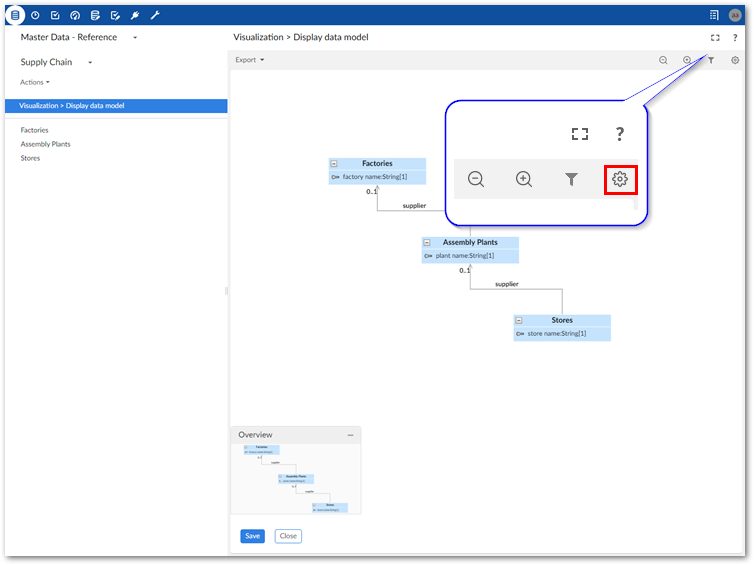
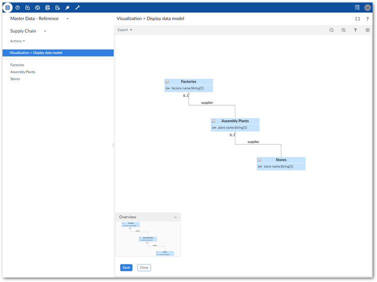

We can begin working through the use case by generating a data model graph to get familiar with the data structure. This graph will also provide information needed during later configuration steps.
The add-on requires no configuration to generate a data model graph. However, you can customize several options. See Changing display and configuration options for more information on customization. The steps below cover some data model graph features and functionality. See Interacting with data model graphs for descriptions of additional options.
To view the data model graph:
Navigate to the Supply Chain dataset that we created during set-up.
We can generate a graph using the Display data model service. This service is accessible from a dataset or table Actions menu under Visualization services. Feel free to run the service from both to observe the differences.
When viewing the graph:
Select the template settings icon and in the Display options group tick the Select all box (or just a few options), save and close. The graph now displays the selected components.

Drag the tables to re-arrange.
Zoom in a bit to change the perspective.
Select Save at the bottom of the screen and provide a name.
As shown below, the graph provides a clear view of how data flows. In this use case, data and physical product flow coincide. So, the Supply Chain model graph tells us that: Factories supply Assembly Plants which in turn supply Stores.

We have solved one part of the problem! Remember, the technicians said the issue stemmed from a manufacturing defect and not improper assembly. The defective parts must originate in one of the factories. But, which one? To determine this, we can generate a graph of data values and relationships and follow the data trail. Before generating this type of graph we need to configure the add-on. To help with the configuration, let's export a copy of the current data model graph for reference purposes.
Click Export at the top of the graph. Choose the desired format and action—either open or save the exported file.
Complete the final piece of the puzzle by following along in the next section. Solving with a data value graph describes how to create a graph that will show data values and provide a report to management.